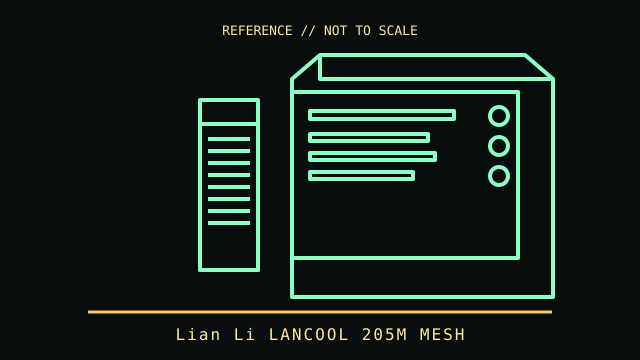

[ TOWER AND LEGACY DESKTOP CASES // IDENTIFIED ENCLOSURE ]
Lian Li LANCOOL 205M MESH
2022 micro-tower chassis. A model-specific enclosure record with physical fit limits, revision notes and manufacturer references.

IDENTIFICATION: Confirm the chassis label, model suffix, revision and regional bundle. Manufacturer maximum clearances are conditional on fan, radiator, drive-cage and cable configurations; allow room for connectors and service access.
Recorded specifications
| Cataloged model | Lian Li LANCOOL 205M MESH |
|---|---|
| Era / class | 2022 micro-tower chassis |
| Dimensions and component limits | MicroATX and Mini-ITX boards; external size 210 × 402.5 × 400 mm (W × D × H). GPU length up to 350 mm, CPU-cooler height up to 160 mm and ATX PSU length up to 180 mm. Four expansion slots and front mesh intake. |
| Revision / variant identification | Manufacturer offers multiple LANCOOL 205 variants with different front panels, motherboard sizes and fan bundles; match the MESH model name on the carton. |
Compatibility and fit notes
This is the LANCOOL 205M MESH variant, not ATX LANCOOL 205 or glass-front 205M. Confirm the fan pack for the exact color/region; motherboard and PSU fit do not imply full-length radiators fit in every position.
- Measure the exact GPU, CPU cooler, PSU, radiator and fan stack; nominal maximums may not be simultaneously usable.
- Check motherboard standoff locations, front-panel connectors, PSU cable routing, drive cages and expansion-slot alignment before assembly.
- Consult the applicable manual for screw locations, removable brackets, included hardware and fan/ARGB pinouts; do not force panels or boards into place.
Model-specific notes
Manufacturer offers multiple LANCOOL 205 variants with different front panels, motherboard sizes and fan bundles; match the MESH model name on the carton.
Sources & further reading
- LIAN LI — LANCOOL 205 / 205M / 205M MeshManufacturer family page and downloads.
- LIAN LI — LANCOOL 205M manualManufacturer manual; confirm the cover/model designation matches the MESH chassis.
Specifications describe the identified model family; validate the exact part number, revision and regional package against the manufacturer's manual before purchase or installation.